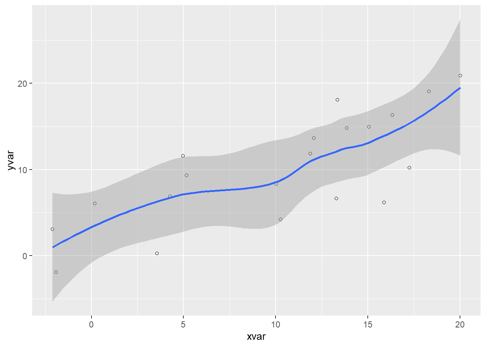

summary(cars) speed dist
Min. : 4.0 Min. : 2.00
1st Qu.:12.0 1st Qu.: 26.00
Median :15.0 Median : 36.00
Mean :15.4 Mean : 42.98
3rd Qu.:19.0 3rd Qu.: 56.00
Max. :25.0 Max. :120.00 Craig
October 6, 2023
This a Quarto document. To learn more about Quarto see https://quarto.org.
Click the Code button in the header to see the full source code of this document.
Here we call the R summary() function—the function’s output is included immediately below:
You can also embed plots, for example:

Note that the code-fold: true parameter was added to the code chunk to hide the code by default (click “Code” above the plot to see the code).
The use of the label and fig-cap options make this a cross-referenceable figure (see Figure 1).
You can also add interactive plots. For example:
Use the knitr::kable() function to print tables as HTML:
| carat | cut | color | clarity | depth | table | price | x | y | z |
|---|---|---|---|---|---|---|---|---|---|
| 0.23 | Ideal | E | SI2 | 61.5 | 55 | 326 | 3.95 | 3.98 | 2.43 |
| 0.21 | Premium | E | SI1 | 59.8 | 61 | 326 | 3.89 | 3.84 | 2.31 |
| 0.23 | Good | E | VS1 | 56.9 | 65 | 327 | 4.05 | 4.07 | 2.31 |
| 0.29 | Premium | I | VS2 | 62.4 | 58 | 334 | 4.20 | 4.23 | 2.63 |
| 0.31 | Good | J | SI2 | 63.3 | 58 | 335 | 4.34 | 4.35 | 2.75 |
| 0.24 | Very Good | J | VVS2 | 62.8 | 57 | 336 | 3.94 | 3.96 | 2.48 |
You can also include LaTeX math:
P\left(A=2\middle|\frac{A^2}{B}>4\right)
---
title: "interactive dygraphs, Plot, knitr kable, LaTeX Example with TOC"
author: "Craig"
date: "2023-10-07"
toc: true
format:
html:
html-math-method: katex
code-tools: true
# embed-resources: true
image: plot.png
execute:
warning: false
---
## Introduction
This a Quarto document. To learn more about Quarto see <https://quarto.org>.
Click the **Code** button in the header to see the full source code of this document.
Here we call the R `summary()` function---the function's output is included immediately below:
```{r}
summary(cars)
```
## Plot Output
You can also embed plots, for example:
```{r}
#| label: fig-pressure
#| fig-cap: "Pressure"
#| code-fold: true
library(ggplot2)
dat <- data.frame(cond = rep(c("A", "B"), each=10),
xvar = 1:20 + rnorm(20,sd=3),
yvar = 1:20 + rnorm(20,sd=3))
ggplot(dat, aes(x=xvar, y=yvar)) +
geom_point(shape=1) +
geom_smooth()
```
Note that the `code-fold: true` parameter was added to the code chunk to hide the code by default (click "Code" above the plot to see the code).
The use of the `label` and `fig-cap` options make this a cross-referenceable figure (see @fig-pressure).
## Interactivity
You can also add interactive plots. For example:
```{r}
#| label: fig-temperatures
#| fig-cap: "New Haven Temperatures"
library(dygraphs)
dygraph(nhtemp) %>%
dyRangeSelector(dateWindow = c("1920-01-01", "1960-01-01"))
```
## Tables
Use the `knitr::kable()` function to print tables as HTML:
```{r}
knitr::kable(head(ggplot2::diamonds))
```
## LaTeX Math
You can also include LaTeX math:
$$
P\left(A=2\middle|\frac{A^2}{B}>4\right)
$$